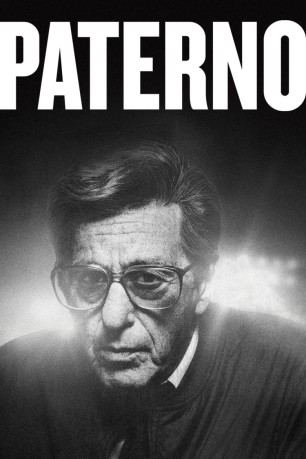

#10079 Paterno
 
 IMDB-Wertung: 6.5 / 10
IMDB-Wertung: 6.5 / 10  Tomatometer: 69
Tomatometer: 69  Metascore: 0
Metascore: 0 
The film centers on Joe Paterno, who after becoming the most successful coach in college football history, is embroiled in Penn State's Jerry Sandusky sexual abuse scandal, challenging his legacy and forcing him to face questions of institutional failure regarding the victims.
Jahr: 2018
Dauer: 100 Minuten
FSK:
Land: USA Studio: HBOTonspuren: DD5.1 - ,
Untertitel:
Auflösung: 1080p (1920x1080) Größe: 3317 MB
Genre: Krimi, Sport, Biographie
Regisseur:  Barry Levinson
Barry Levinson
Drehbuch: Debora Cahn, John C. Richards
Soundtrack: Evgueni Galperine, Sacha Galperine
Darsteller:
 Al Pacino als Joe Paterno
Al Pacino als Joe Paterno Kathy Baker als Sue Paterno
Kathy Baker als Sue Paterno Kenneth Maharaj als MRI Tech
Kenneth Maharaj als MRI Tech- Michael Mastro als Guido D'Elia
- Joshua Morgan als Bobby, Media Wrangler
- Ross Degraw als Sports Producer
 Larry Mitchell als Jay Paterno
Larry Mitchell als Jay Paterno Darren Goldstein als Mike McQueary
Darren Goldstein als Mike McQueary Riley Keough als Sara Ganim
Riley Keough als Sara Ganim Nicholas Sadler als Todd, Press Photographer
Nicholas Sadler als Todd, Press Photographer Greg Grunberg als Scott Paterno
Greg Grunberg als Scott Paterno Annie Parisse als Mary Kay Paterno
Annie Parisse als Mary Kay Paterno- Julian Gamble als Galen Hall
 William Hill als Tom Bradley
William Hill als Tom Bradley- Kaliswa Brewster als Mara Lewis
- Josh Mowery als Ron Vanderlinden
- Joseph Setticase als Drew Astorino, Def. Captain
- Dan Vaughan als Football Player
- Sergio Joachim als Football Player
- Jock McKissic als Football Player
- Adam Shippey als Football Player
- Los Jones als Football Player
- Chris Setticase als Football Player
- Lauren S. Gordon als Nittany Club Donor
- Jim Johnson als Jerry Sandusky
 Steve Coulter als Tim Curley
Steve Coulter als Tim Curley Tom Kemp als Graham Spanier
Tom Kemp als Graham Spanier- Gadi Rubin als Sports Cameraman
- Mary Gutzi als Sandra Spanier
 Peter Jacobson als David Newhouse
Peter Jacobson als David Newhouse- Mac Brydon als Charlie Thompson
- Jim Santangeli als Mike Gillum
- Ben Cook als Aaron Fisher
- Kristen Bush als Dawn Fisher
- Justin Matthews als Liam
- Sideara St. Claire als Mindy
- Tess Soltau als Juliet
- Georgia Buchanan als Kim Belcher
- Thomas Bradshaw als Chris, Kim's Husband
- Bobby Kruger als TV Producer
- Todd Alan Crain als Hugh
 Patrick McDade als Frank Noonan
Patrick McDade als Frank Noonan- Candace Bryant als News Producer
- Dylan Perlman als High School Student
- Corwin C. Tuggles als High School Student
- Thom Niemann als PSU Student
- Steve Beauchamp als Cameraman
- Lilli Kay als Dori
 Celia Au als Cathy, Newhouse's Secretary
Celia Au als Cathy, Newhouse's Secretary Sean Cullen als Dan McGinn
Sean Cullen als Dan McGinn
Datei: X:\2018(N-Z)\Paterno (2018, FSK, 1920x1080).mkv seit 28.11.2018
Festplatte: HD 2018(G-Z)-2019(A-Z)
 Es gibt insgesamt 172 Filme in der Gruppe '2018(N-Z)'
Es gibt insgesamt 172 Filme in der Gruppe '2018(N-Z)'